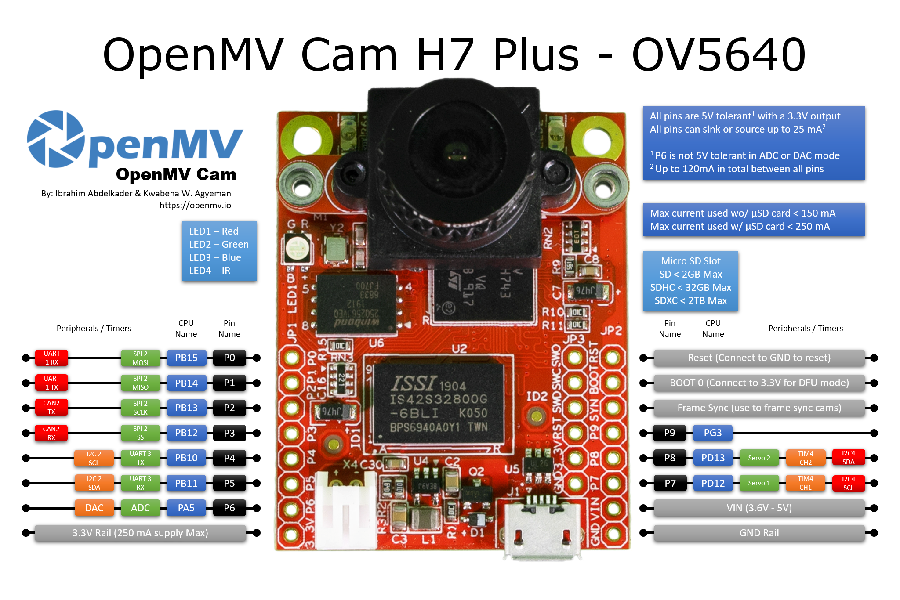
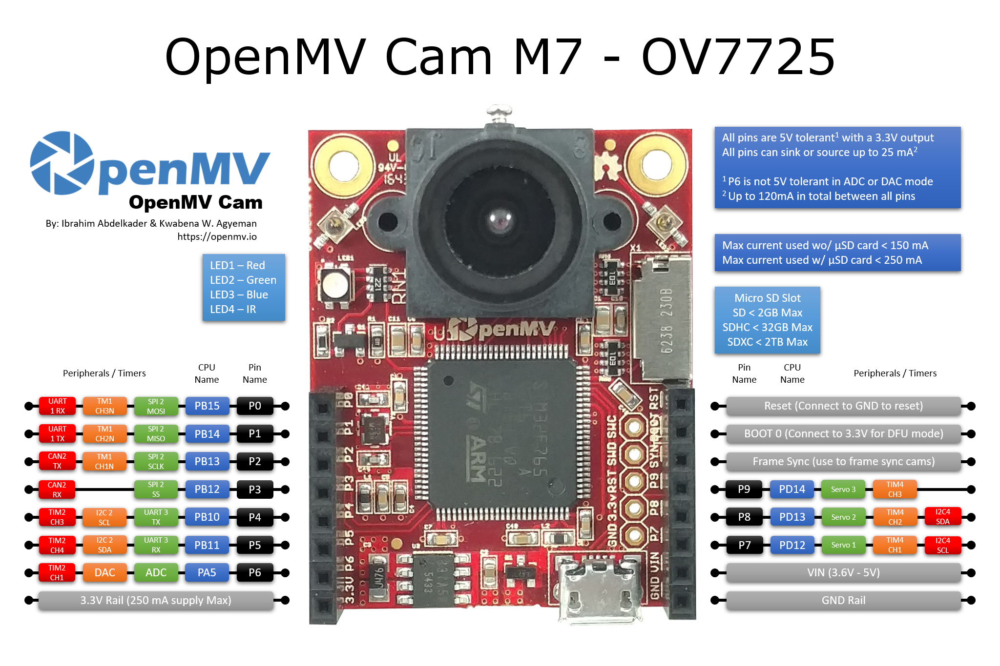
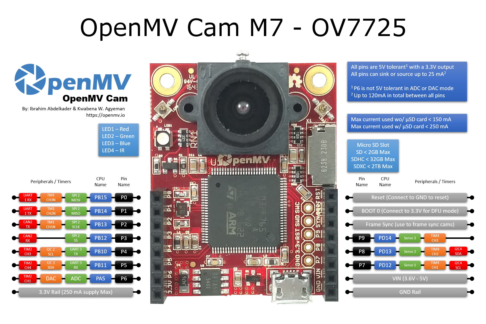

Quick reference for the openmvcam¶
Below is a quick reference for the OpenMV Cam. If it is your first time working with the OpenMV Cam please consider reading the following sections first:
{kind=link}
{kind=link}
 

{kind=link}


General OpenMV Cams Board Control¶
All OpenMV Cams can use the machine module to control the camera hardware. Please refer to the
pinout image for which SPI/I2C/UART/CAN/PWM/TIMER channels are avialable on what I/O pins.
Delay and timing¶
Use the time module:
import time
time.sleep(1) # sleep for 1 second
time.sleep_ms(500) # sleep for 500 milliseconds
time.sleep_us(10) # sleep for 10 microseconds
start = time.ticks_ms() # get millisecond counter
delta = time.ticks_diff(time.ticks_ms(), start) # compute time difference
Virtual Timers¶
Example of usage:
from machine import Timer
tim0 = Timer(-1)
tim0.init(period=5000, mode=Timer.ONE_SHOT, callback=lambda t:print(0))
tim1 = Timer(-1)
tim1.init(period=2000, mode=Timer.PERIODIC, callback=lambda t:print(1))
The period is in milliseconds.
Pins and GPIO¶
Use the machine.Pin class:
from machine import Pin
p0 = Pin('P0', Pin.OUT) # create output pin on GPIO0
p0.on() # set pin to "on" (high) level
p0.off() # set pin to "off" (low) level
p0.value(1) # set pin to on/high
p2 = Pin('P2', Pin.IN) # create input pin on GPIO2
print(p2.value()) # get value, 0 or 1
p4 = Pin('P4', Pin.IN, Pin.PULL_UP) # enable internal pull-up resistor
p5 = Pin('P5', Pin.OUT, value=1) # set pin high on creation
There’s a higher-level abstraction machine.Signal
which can be used to invert a pin. Useful for illuminating active-low LEDs
using on() or value(1).
UART (serial bus)¶
See machine.UART.
from machine import UART
uart1 = UART(1, baudrate=115200)
uart1.write('hello') # write 5 bytes
uart1.read(5) # read up to 5 bytes
PWM (pulse width modulation)¶
The PWM functions are provided by the machine.PWM class. It supports all basic methods listed for that class and a few additional methods for handling signal groups.
from machine import Pin, PWM
pwm2 = PWM("P6") # create PWM object from a pin
pwm2.freq() # get current frequency
pwm2.freq(1000) # set frequency
pwm2.duty_u16() # get current duty cycle, range 0-65535
pwm2.duty_u16(200) # set duty cycle, range 0-65535
pwm2.deinit() # turn off PWM on the pin
# create a complementary signal pair on Pin 2 and 3
pwm2 = PWM((6, 7), freq=2000, duty_ns=20000)
# Create a group of four synchronized signals.
# Start with Pin(4) at submodule 0, which creates the sync pulse.
pwm4 = PWM(Pin(4), freq=1000, align=PWM.HEAD)
# Pins 5, 6, and 9 are pins at the same module
pwm5 = PWM(Pin(5), freq=1000, duty_u16=10000, align=PWM.HEAD, sync=True)
pwm6 = PWM(Pin(6), freq=1000, duty_u16=20000, align=PWM.HEAD, sync=True)
pwm9 = PWM(Pin(9), freq=1000, duty_u16=30000, align=PWM.HEAD, sync=True)
pwm3 # show the PWM objects properties
ADC (analog to digital conversion)¶
Use the machine.ADC class:
from machine import ADC
adc = ADC("P5") # create ADC object on ADC pin
adc.read_u16() # read value, 0-65536 across voltage range 0.0v - 3.3v
The resolution of the ADC is 12 bit with 10 to 11 bit accuracy, irrespective of the value returned by read_u16(). If you need a higher resolution or better accuracy, use an external ADC.
Software SPI bus¶
Software SPI (using bit-banging) works on all pins, and is accessed via the machine.SoftSPI class.
from machine import Pin, SoftSPI
# construct a SoftSPI bus on the given pins
# polarity is the idle state of SCK
# phase=0 means sample on the first edge of SCK, phase=1 means the second
spi = SoftSPI(baudrate=100000, polarity=1, phase=0, sck=Pin(0), mosi=Pin(2), miso=Pin(4))
spi.init(baudrate=200000) # set the baudrate
spi.read(10) # read 10 bytes on MISO
spi.read(10, 0xff) # read 10 bytes while outputting 0xff on MOSI
buf = bytearray(50) # create a buffer
spi.readinto(buf) # read into the given buffer (reads 50 bytes in this case)
spi.readinto(buf, 0xff) # read into the given buffer and output 0xff on MOSI
spi.write(b'12345') # write 5 bytes on MOSI
buf = bytearray(4) # create a buffer
spi.write_readinto(b'1234', buf) # write to MOSI and read from MISO into the buffer
spi.write_readinto(buf, buf) # write buf to MOSI and read MISO back into buf
The highest supported baud rate is 500000.
Hardware SPI bus¶
Hardware SPI is accessed via the machine.SPI class and has the same methods as software SPI above:
from machine import SPI, Pin
spi = SPI(1, 10000000)
cs_pin = Pin(6, Pin.OUT, value=1)
cs_pin(0)
spi.write('Hello World')
cs_pin(1)
The keyword option cs=n can be used to enable the cs pin 0 or 1 for an automatic cs signal. The default is cs=-1. Using cs=-1 the automatic cs signal is not created. In that case, cs has to be set by the script. Clearing that assignment requires a power cycle.
Notes:
Even if the highest reliable baud rate at the moment is about 30 Mhz, setting a baud rate will not always result in exactly that frequency, especially at high baud rates.
Sending at higher baud rate is possible. In the tests receiving worked up to 60 MHz, sending up to 90 MHz.
Software I2C bus¶
Software I2C (using bit-banging) works on all output-capable pins, and is accessed via the machine.SoftI2C class:
from machine import Pin, SoftI2C
i2c = SoftI2C(scl=Pin(5), sda=Pin(4), freq=100000)
i2c.scan() # scan for devices
i2c.readfrom(0x3a, 4) # read 4 bytes from device with address 0x3a
i2c.writeto(0x3a, '12') # write '12' to device with address 0x3a
buf = bytearray(10) # create a buffer with 10 bytes
i2c.writeto(0x3a, buf) # write the given buffer to the slave
The highest supported freq is 400000.
Hardware I2C bus¶
Hardware I2C is accessed via the machine.I2C class and has the same methods as software SPI above:
from machine import I2C
i2c = I2C(1, 400_000)
i2c.writeto(0x76, b"Hello World")
Real time clock (RTC)¶
See machine.RTC:
from machine import RTC
rtc = RTC()
rtc.datetime((2017, 8, 23, 1, 12, 48, 0, 0)) # set a specific date and time
rtc.datetime() # get date and time
rtc.now() # return date and time in CPython format.
OneWire driver¶
The OneWire driver is implemented in software and works on all pins:
from machine import Pin
import onewire
ow = onewire.OneWire(Pin(12)) # create a OneWire bus on GPIO12
ow.scan() # return a list of devices on the bus
ow.reset() # reset the bus
ow.readbyte() # read a byte
ow.writebyte(0x12) # write a byte on the bus
ow.write('123') # write bytes on the bus
ow.select_rom(b'12345678') # select a specific device by its ROM code
There is a specific driver for DS18S20 and DS18B20 devices:
import time, ds18x20
ds = ds18x20.DS18X20(ow)
roms = ds.scan()
ds.convert_temp()
time.sleep_ms(750)
for rom in roms:
print(ds.read_temp(rom))
Be sure to put a 4.7k pull-up resistor on the data line. Note that
the convert_temp() method must be called each time you want to
sample the temperature.
DHT driver¶
The DHT driver is implemented in software and works on all pins:
import dht
import machine
d = dht.DHT11(machine.Pin(4))
d.measure()
d.temperature() # eg. 23 (°C)
d.humidity() # eg. 41 (% RH)
d = dht.DHT22(machine.Pin(4))
d.measure()
d.temperature() # eg. 23.6 (°C)
d.humidity() # eg. 41.3 (% RH)
Be sure to have a 4.7k pull-up resistor on the data line. Some DHT modules may already have one.
STM32 Based OpenMV Cams General Board Control¶
STM32 based OpenMV Cams can use the pyb module to control the camera hardware. Please note that
the pyb module will be deprecated. Please use the machine module for new code.
Delay and timing¶
Use the time module:
import utime
utime.sleep(1) # sleep for 1 second
utime.sleep_ms(500) # sleep for 500 milliseconds
utime.sleep_us(10) # sleep for 10 microseconds
start = utime.ticks_ms() # get value of millisecond counter
delta = utime.ticks_diff(utime.ticks_ms(), start) # compute time difference
LEDs¶
See pyb.LED.
from pyb import LED
led = LED(1) # red led
led.toggle()
led.on()
led.off()
LED Pinout:
LED(1) -> Red RGB LED Segment
LED(2) -> Green RGB LED Segment
LED(3) -> Blue RGB LED Segment
LED(4) -> IR LEDs
Pins and GPIO¶
See pyb.Pin.
from pyb import Pin
p_out = Pin('P7', Pin.OUT_PP)
p_out.high()
p_out.low()
p_in = Pin('P8', Pin.IN, Pin.PULL_UP)
p_in.value() # get value, 0 or 1
GPIO Pinout:
Pin(‘P0’) -> P0 (PB15)
Pin(‘P1’) -> P1 (PB14)
Pin(‘P2’) -> P2 (PB13)
Pin(‘P3’) -> P3 (PB12)
Pin(‘P4’) -> P4 (PB10)
Pin(‘P5’) -> P5 (PB11)
Pin(‘P6’) -> P6 (PA5)
Pin(‘P7’) -> P7 (PD12)
Pin(‘P8’) -> P8 (PD13)
Pin(‘P9’) -> P9 (PD14) (OpenMV Cam M7/H7 Only)
All pins are 5V tolerant with a 3.3V output (P6 is not 5V tolerant in ADC or DAC mode).
All pins can sink or source up to 25 mA (Up to 120 mA in total between all pins).
Servo control¶
See pyb.Servo.
from pyb import Servo
s1 = Servo(1) # servo on position 1 (P7)
s1.angle(45) # move to 45 degrees
s1.angle(-60, 1500) # move to -60 degrees in 1500ms
s1.speed(50) # for continuous rotation servos
Servo Pinout:
Servo(1) -> P7 (PD12)
Servo(2) -> P8 (PD13)
Servo(3) -> P9 (PD14) (OpenMV Cam M7/H7 Only - Not OpenMV Cam H7 Plus)
External interrupts¶
See pyb.ExtInt.
from pyb import Pin, ExtInt
callback = lambda e: print("intr")
ext = ExtInt(Pin('P7'), ExtInt.IRQ_RISING, Pin.PULL_NONE, callback)
GPIO Pinout:
Pin(‘P0’) -> P0 (PB15)
Pin(‘P1’) -> P1 (PB14)
Pin(‘P2’) -> P2 (PB13)
Pin(‘P3’) -> P3 (PB12)
Pin(‘P4’) -> P4 (PB10)
Pin(‘P5’) -> P5 (PB11)
Pin(‘P6’) -> P6 (PA5)
Pin(‘P7’) -> P7 (PD12)
Pin(‘P8’) -> P8 (PD13)
Pin(‘P9’) -> P9 (PD14) (OpenMV Cam M7/H7 Only)
Timers¶
See pyb.Timer.
from pyb import Timer
tim = Timer(2, freq=1000)
tim.counter() # get counter value
tim.freq(0.5) # 0.5 Hz
tim.callback(lambda t: pyb.LED(1).toggle())
For OpenMV Cam M4: TIM2, TIM3, and TIM4
For OpenMV Cam F7: TIM2, TIM3, TIM4 and TIM7 through TIM14
For OpenMV Cam H7: TIM2, TIM3, TIM4, TIM7, TIM8 and TIM12 through TIM17
Timer Pinout:
Timer 1 Channel 3 Negative -> P0 (PB15)
Timer 1 Channel 2 Negative -> P1 (PB14)
Timer 1 Channel 1 Negative -> P2 (PB13)
Timer 2 Channel 3 Positive -> P4 (PB10)
Timer 2 Channel 4 Positive -> P5 (PB11)
Timer 2 Channel 1 Positive -> P6 (PA5)
Timer 4 Channel 1 Negative -> P7 (PD12)
Timer 4 Channel 2 Negative -> P8 (PD13)
Timer 4 Channel 3 Positive -> P9 (PD14) (OpenMV Cam M7/H7 Only - Not OpenMV Cam H7 Plus)
PWM (pulse width modulation)¶
from pyb import Pin, Timer
p = Pin('P4') # P4 has TIM2, CH3
tim = Timer(2, freq=1000)
ch = tim.channel(3, Timer.PWM, pin=p)
ch.pulse_width_percent(50)
For OpenMV Cam M4: TIM2, TIM3, and TIM4
For OpenMV Cam F7: TIM2, TIM3, TIM4 and TIM7 through TIM14
For OpenMV Cam H7: TIM2, TIM3, TIM4, TIM7, TIM8 and TIM12 through TIM17
Timer Pinout:
Timer 1 Channel 3 Negative -> P0 (PB15)
Timer 1 Channel 2 Negative -> P1 (PB14)
Timer 1 Channel 1 Negative -> P2 (PB13)
Timer 2 Channel 3 Positive -> P4 (PB10)
Timer 2 Channel 4 Positive -> P5 (PB11)
Timer 2 Channel 1 Positive -> P6 (PA5)
Timer 4 Channel 1 Negative -> P7 (PD12)
Timer 4 Channel 2 Negative -> P8 (PD13)
Timer 4 Channel 3 Positive -> P9 (PD14) (OpenMV Cam M7/H7 Only - Not OpenMV Cam H7 Plus)
ADC (analog to digital conversion)¶
from pyb import Pin, ADC
adc = ADC(Pin('P6'))
adc.read() # read value, 0-4095
ADC Pinout:
ADC(Pin(‘P6’)) -> P6 (PA5)
P6 is 3.3V tolerant in ADC mode - NOT 5V TOLERANT!
DAC (digital to analog conversion)¶
from pyb import Pin, DAC
dac = DAC('P6')
dac.write(120) # output between 0 and 255
DAC Pinout:
DAC(Pin(‘P6’)) -> P6 (PA5)
P6 is 3.3V tolerant in DAC mode - NOT 5V TOLERANT!
UART (serial bus)¶
See pyb.UART.
from pyb import UART
uart = UART(3, 9600, timeout_char=1000)
uart.write('hello')
uart.read(5) # read up to 5 bytes
UART Pinout:
UART 3 RX -> P5 (PB11)
UART 3 TX -> P4 (PB10)
UART 1 RX -> P0 (PB15) (OpenMV Cam M7/H7 Only)
UART 1 TX -> P1 (PB14) (OpenMV Cam M7/H7 Only)
SPI bus¶
See pyb.SPI.
from pyb import SPI
spi = SPI(2, SPI.MASTER, baudrate=1000000, polarity=1, phase=0)
spi.send('hello')
spi.recv(5) # receive 5 bytes on the bus
spi.send_recv('hello') # send a receive 5 bytes
SPI Pinout:
SPI 2 MOSI (Master-Out-Slave-In) -> P0 (PB15)
SPI 2 MISO (Master-In-Slave-Out) -> P1 (PB14)
SPI 2 SCLK (Serial Clock) -> P2 (PB13)
SPI 2 SS (Serial Select) -> P3 (PB12)
I2C bus¶
See pyb.I2C.
from pyb import I2C
i2c = I2C(2, I2C.MASTER, baudrate=100000)
i2c.scan() # returns list of slave addresses
i2c.send('hello', 0x42) # send 5 bytes to slave with address 0x42
i2c.recv(5, 0x42) # receive 5 bytes from slave
i2c.mem_read(2, 0x42, 0x10) # read 2 bytes from slave 0x42, slave memory 0x10
i2c.mem_write('xy', 0x42, 0x10) # write 2 bytes to slave 0x42, slave memory 0x10
I2C Pinout:
I2C 2 SCL (Serial Clock) -> P4 (PB10)
I2C 2 SDA (Serial Data) -> P5 (PB11)
I2C 4 SCL (Serial Clock) -> P7 (PD13) (OpenMV Cam M7/H7 Only)
I2C 4 SDA (Serial Data) -> P8 (PD12) (OpenMV Cam M7/H7 Only)